Using Learn Maths
Usage page, as of 15 November 2026. How to work through the units “What is a function?” and “What is the derivative?” with four stations each, practise, read the feedback and manage the progress. The pictures are screenshots of the app.
The window
Open the app from the Apps menu with  Learn Maths or with
Learn Maths or with Alt+A. It has no dialog windows; everything is in one tab.
On the left is the vertical bar: at the top the card Learning units, below it the four stations of the chosen unit and the practice card, next to it the card of the chosen station with task, inputs and buttons. The middle belongs to the picture of the task. Below, on the left, is the feedback on the last answer – with a coloured bar: green right, ochre partly correct, red not right yet –, on the right the history of all attempts, and at the very bottom the status.
The bar
The buttons carry only icons; what they do is shown in the tooltip. A completed station gets a tick in its tooltip.
| Icon | Tooltip | What happens |
|---|---|---|
 | Learning units | Choose a unit; the bar then shows its stations. |
 | The function machine | Find a rule from pairs of values. |
| Arrow diagrams | Is the mapping a function? | |
 | From table to graph | Place points, read graphs, vertical line test. |
 | Filling graphs | Match containers and graphs. |
| Average rate of change | Slope of the secant on the slope triangle (derivative unit). | |
| From secant to tangent | Drag Q towards P, compare the slopes in the table. | |
 | The limit | m(0) and the limit of m(h). |
| The h-method | Derivative at a point and in general, step by step. | |
| Practice | New tasks on zeros, linear factors and derivatives at three levels. | |
| Clear progress | Asks inside the window; only a second click clears. | |
 | Help for this app | Opens the documentation app on this page. |
The function machine
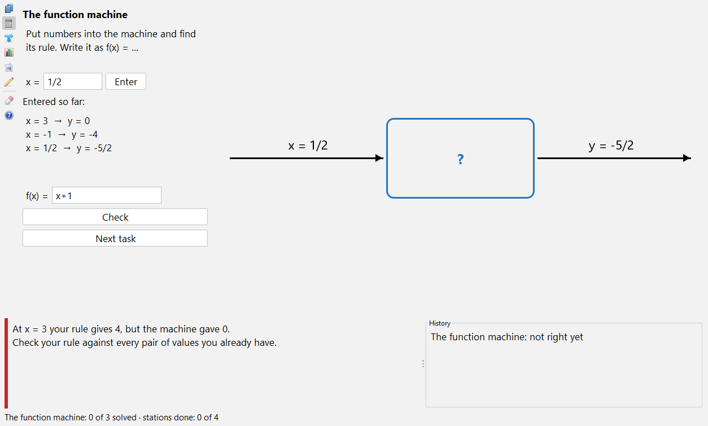
- Enter a number after x = – whole, decimal with comma or point, or a fraction like
1/2– and press Enter (or the Enter key). The machine shows the value, the pair goes into the list Entered so far. - As soon as you have a guess, enter the rule after f(x) =, for example
2x-1orx²+1, and press Check. - If the rule is right, the task is solved. If it fits the pairs entered but not everywhere, the answer is “partly right”: try more numbers. Next task sets a new machine.
A term with x in the machine's input field is rejected – it takes numbers only. Some machines give different values for the same x; then the card asks, instead of for the rule, whether this is still a function, and you answer Yes or No. Tip: enter the same number twice.
Arrow diagrams
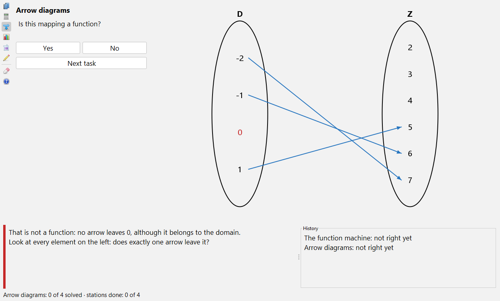
The question is always: Is this mapping a function? Answer with Yes or No. The feedback explains how to tell: does exactly one arrow leave each element on the left? Two arrows from one element, or an element without an arrow, keep the mapping from being a function; two arrows to the same target, on the other hand, are allowed.
From table to graph
The station has two parts, switched at the top of the card: Table of values and Vertical line.
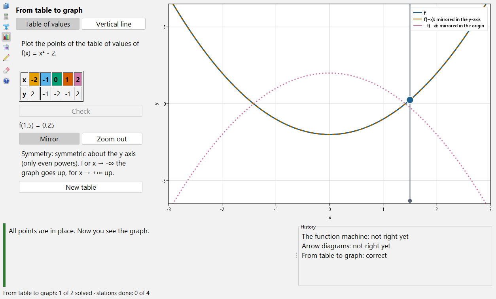
- The function is given above the table. The coloured points first lie on top of each other at the right edge; drag each one to its place with the mouse. They snap to half units. The colour in the table shows which point belongs to which column.
- Press Check. If a point is in the wrong place, the feedback says whether x and y are swapped or only the sign of y is wrong.
- Once all points are in place, the graph appears with a vertical slider: drag it, and the card shows f(x) at that point. Mirror shows f(−x) and −f(−x), Zoom out shows the graph from −20 to 20. The card names the symmetry and the behaviour for large x.
- New table sets the next function.
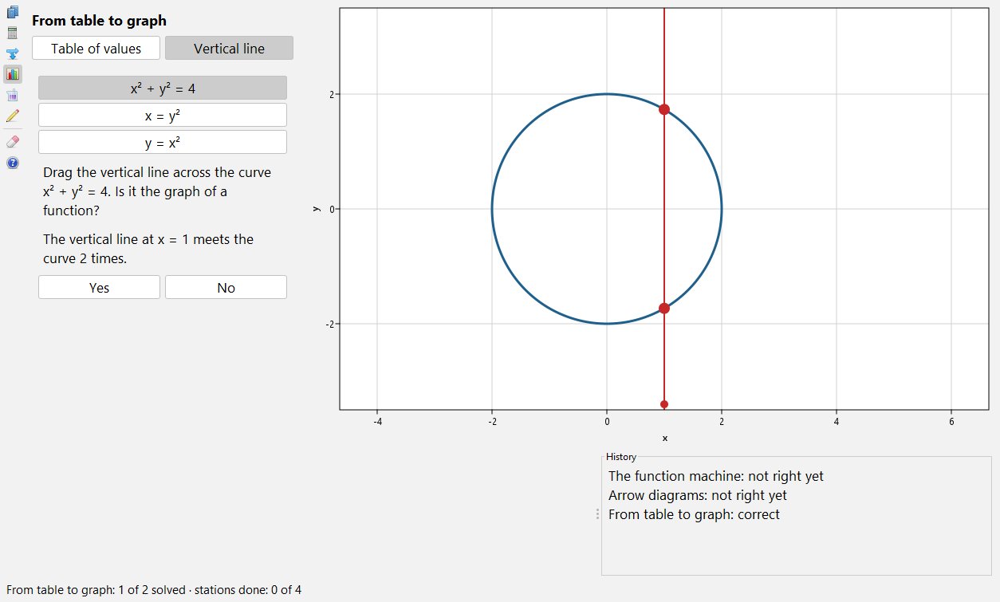
In the Vertical line part you choose one of three curves (circle, lying parabola x = y², standing parabola y = x²) and drag the vertical line by its handle at the bottom across the curve. The intersections are marked red and counted. Then answer with Yes or No whether the curve is the graph of a function.
Filling graphs
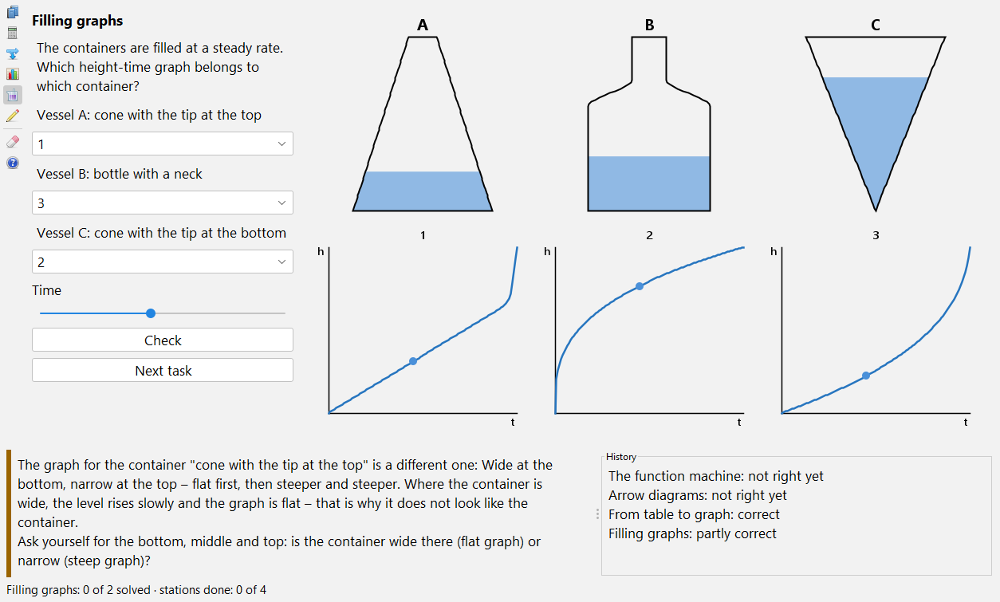
- Drag the time slider and watch how fast the level rises in each container.
- For each container choose the matching graph. Above each choice it says what kind of container it is.
- Press Check. If a match is wrong, the feedback explains from the shape of the container how its graph must run: where the container is wide, the level rises slowly and the graph is flat.
Practice
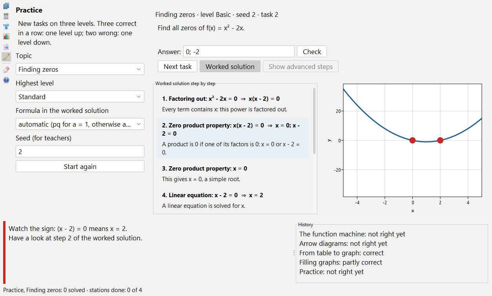
The card with the pencil sets tasks from a generator: finding zeros, linear factors and differentiation, each at the levels basic, standard and advanced. Every task is checked by recomputing it; the numbers stay in a range that can be done by hand.
- On the card choose topic and highest level (default standard) and press Start again. The sequence starts at the basic level.
- Formula in the worked solution: pq formula, quadratic formula (abc) or automatic (pq when x² has coefficient 1, otherwise abc) – whichever your class uses. The tasks stay the same, only the worked solution uses the chosen formula; the change applies at once, also to the task on screen.
- The seed field is for teachers: with the same seed everybody gets the same tasks in the same order. Left empty, the app picks a random seed; it is shown in the header above the task.
- Type the answer and press Check. Zeros are separated by semicolons (
-2; 3);x = ±√2,(3 ± √17)/4orL = { }work as well; terms in school notation (3x² - 2,2(x + 1)(x - 3)). An answer that cannot be read does not count as an attempt; the feedback shows the position. - Worked solution shows the solution step by step. If the app recognises a typical mistake, the feedback names the step where it arises and the worked solution highlights it. Guessing and polynomial division are not required in the basic course and are therefore collapsed; Show advanced steps expands them.
- For zero tasks the graph with the zeros appears after the answer – before, it would give the solution away.
- Next task moves on. Three correct answers in a row raise the level by one, at most to the chosen one; two wrong ones lower it. No task comes back before 40 others have been shown, not even after a restart. The kind of task changes from one task to the next as long as possible – at the basic level some kinds have only a few tasks.
Choosing a learning unit
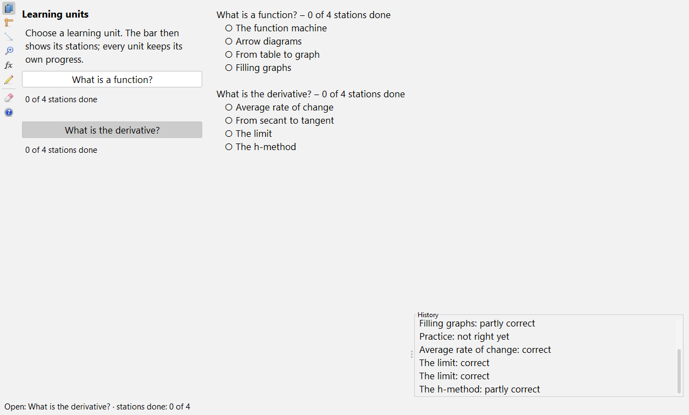
The app has two learning units: What is a function? and What is the derivative?. The card with the books at the top of the bar chooses the unit. The bar then shows only its stations, and the app opens the first station not yet done. Every unit counts its own progress; Practice stands on its own and belongs to no unit.
What is the derivative?
Four stations lead from the average rate of change to the h-method. At the top of every card there is a Remember box with the short theory of the station. The colours are the same everywhere: Δx and h blue, Δy ochre, the secant green, the tangent vermilion. The mathematics behind it is explained on the page From the difference quotient to the derivative.
Average rate of change
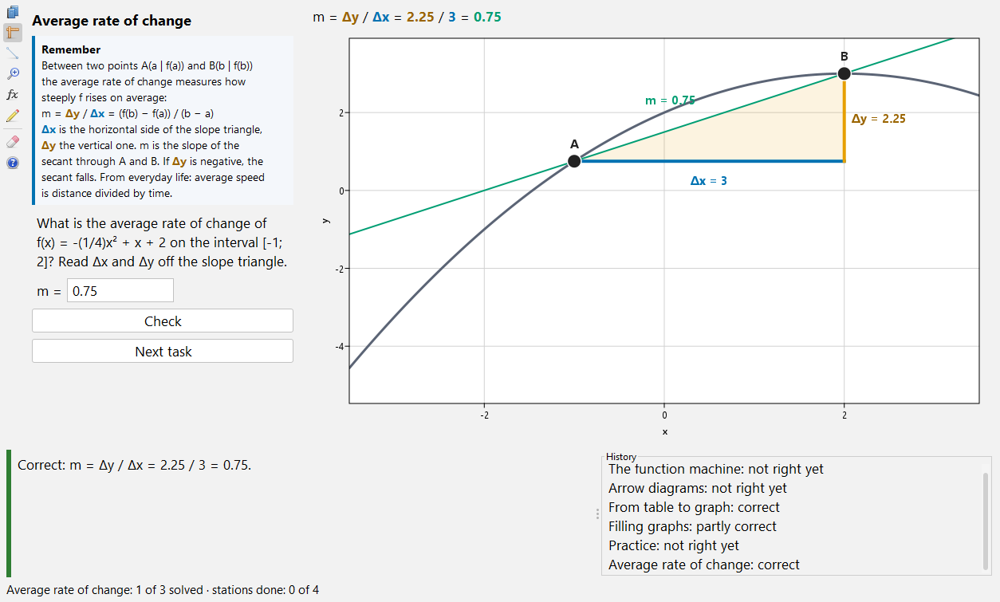
The tasks alternate. In a calculation task A and B are fixed; you read Δx and Δy off the triangle, type m into the field (-0.5, 3/2) and press Check. Until the first counted answer the formula shows m = ?. In a dragging task you drag A and B along the graph until m hits the target – a given value, 0 or a negative value – and press Check. The points snap to whole numbers; Δx, Δy and m are shown at once while dragging. The feedback recognises a fraction upside down, a wrong sign and a forgotten division.
From secant to tangent
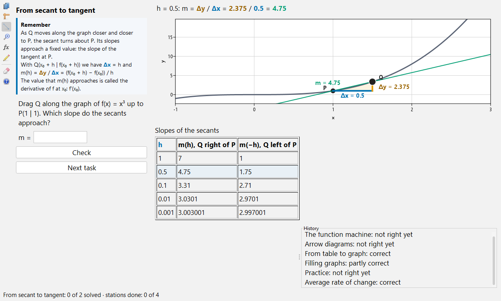
P is fixed, Q is dragged along the graph in steps of a tenth. The formula above the picture gives h and the slope of the secant, the table below the picture the slopes for h = 1; 0.5; 0.1; 0.01; 0.001, from the right and from the left. When Q lies on P the tangent appears with a slope triangle of width 1. The answer is the number the slopes approach; a function value or a slope from the table is recognised as such.
The limit
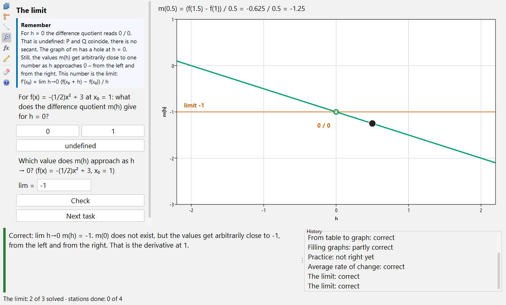
First the card asks what m(h) gives for h = 0: 0, 1 or undefined. Then you drag the point along the graph towards the hole from both sides; the formula above the picture works it out for the dragged h. Type the value that m(h) gets arbitrarily close to into the field lim = and press Check.
The h-method
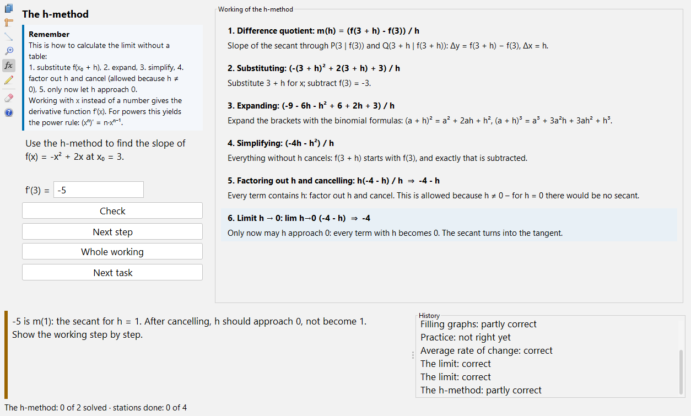
The tasks alternate between a point (f′(x₀) =, answer a number) and the derivative function (f′(x) =, answer a term such as 3x² - 2). Next step reveals the working one step at a time, Whole working all at once. If the app recognises the step where a wrong answer goes astray, it reveals the working up to there and highlights it. After the correct answer the whole working is shown, below it the graph of f with the tangent or with f′ dashed.
Progress and work state
Each station asks for a number of solved tasks: three machines, four arrow diagrams, two tasks on the graph, two filling tasks; in the derivative unit three rates of change, two tangents, three limits and two h-method tasks. Once it is reached, the status line reports the completed station and names the next one. The status at the very bottom shows both all the time, for the unit of the open station.
The work state remembers the progress per unit, the open unit and station, task numbers and the practice sequence (topic, levels, seed, task, formula); at the next start you continue at the same place with the same task. The eraser clears the progress of all units – after a confirmation inside the window, given by a second click.